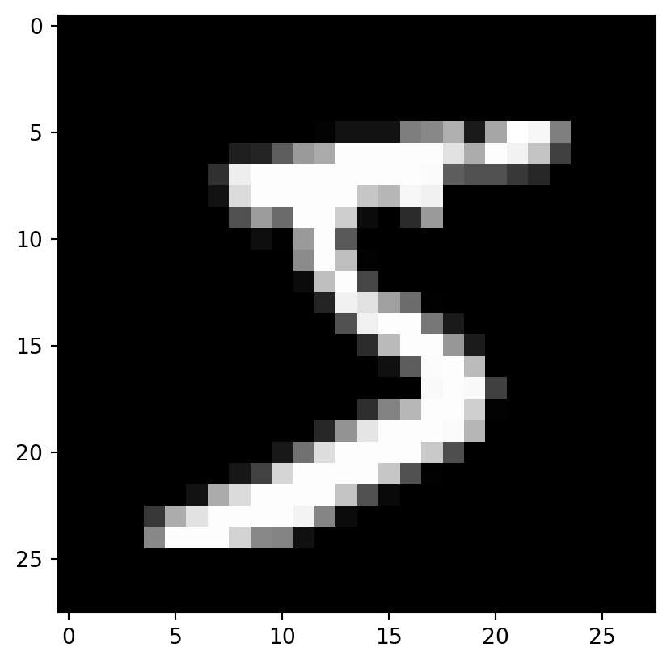

from pathlib import Path
import pickle, gzip, math, os, time, shutil, matplotlib as mpl, matplotlib.pyplot as plt
MNIST_URL='https://github.com/mnielsen/neural-networks-and-deep-learning/blob/master/data/mnist.pkl.gz?raw=true'
path_data = Path('data')
path_data.mkdir(exist_ok=True)
path_gz = path_data/'mnist.pkl.gz'I have finished and fallen in love with fast.ai course 1. It has been very informative. It showed me the rope about PyTorch and two important building blocks of deep learning: Embedding and Convolution. I was excited to learn that there was a part 2. In this part, Jeremy will dive deeper into the design of a deep learning framework, and implement one from the scratch the way PyTorch was designed. Here were my (verbose) writtent version for it.
Rules
- Permitted at the beginning: Python and all standard libraries, matplotlib, Jupyter Notebook and nbdev.
- After deriving something, we can use the implemented version for that.
Get the data
The first thing you need to do is getting the data and visualize it in some way. The data we use is the good ol’ MNIST, available from the Internet. Based on good practice, let’s assign the URL to a variable, and prepare a directory to store the data.
pathlib.Path is a handy object as you can do special operations with string to receive a new Path, such as the division above. It is more readable than just raw strings.
To get the data, let’s use urllib.request.urlretrieve
from urllib.request import urlretrieve
if not path_gz.exists(): urlretrieve(MNIST_URL, path_gz)The data is compressed in the .pkl.gz format, which can be decompressed sequentially with gzip and pickle.
with gzip.open(path_gz, 'rb') as f:
# Omit test set for simplicity
((x_train, y_train), (x_valid, y_valid), _) = pickle.load(f, encoding='latin-1')Visualize the data
Great, we have decompressed the data, but what exactly are stored inside these variables?
x_train, x_valid(array([[0., 0., 0., ..., 0., 0., 0.],
[0., 0., 0., ..., 0., 0., 0.],
[0., 0., 0., ..., 0., 0., 0.],
...,
[0., 0., 0., ..., 0., 0., 0.],
[0., 0., 0., ..., 0., 0., 0.],
[0., 0., 0., ..., 0., 0., 0.]], dtype=float32),
array([[0., 0., 0., ..., 0., 0., 0.],
[0., 0., 0., ..., 0., 0., 0.],
[0., 0., 0., ..., 0., 0., 0.],
...,
[0., 0., 0., ..., 0., 0., 0.],
[0., 0., 0., ..., 0., 0., 0.],
[0., 0., 0., ..., 0., 0., 0.]], dtype=float32))Okay, they are numpy.ndarray. We are not allowed to use numpy yet, so we will need to convert it to list. Yep, very sorry about that. But first, uh, let’s cheat a bit by checking the shape of the arrays.
x_train.shape, x_valid.shape((50000, 784), (10000, 784))Okay, it seems that the $28 $ images are flattened into 784-element arrays. Convert any of the xs to a list will yield a big list of lists. It is unnecessary, so let’s just take 1 data point.
x = list(x_train[0])
x[:10], len(x)([0.0, 0.0, 0.0, 0.0, 0.0, 0.0, 0.0, 0.0, 0.0, 0.0], 784)To visualize x, we need to convert it into a list of 28 lists, each with 28 elements. Is there a way to do that in Python? I said “No”, but Jeremy showed that there are at least two ways
Firstly, we can make use of the yield keyword, which is used to generate iterators in Python. We want to generate 28 iterators, each containing 28 elements, from x. In Python, it is as simple as
def chunks(x, size):
max_size = len(x)
for i in range(0, max_size, size): yield x[i:min(max_size, i+size)]
mpl.rcParams['image.cmap'] = 'gray'
plt.imshow(list(chunks(x, 28)));
Secondly, we can use itertools.islice.
from itertools import islice
it = iter(x[:10])
print('First', list(islice(it, 5)))
print('Second', list(islice(it, 5)))
print('Third', list(islice(it, 5)))First [0.0, 0.0, 0.0, 0.0, 0.0]
Second [0.0, 0.0, 0.0, 0.0, 0.0]
Third []Simply, islice(iterable, stop) will return a new iterator from the iterable (which can be another iterator), stop at stop. Paired with default start and step of 0 and 1 respectively, it means that islice(it, 5) will return an iterator containing the first 5 values of it. Now we realize that doing so will also exhaust these first 5 values of it, so the next call will call the next 5 values of it. Paired with a loop, it works exactly like chunks() defined above.
it = iter(x)
img = list(iter(lambda: list(islice(it, 28)), []))
plt.imshow(img);
Work like a charm. A note: that empty list passed in after the lambda function is for the sentinel argument of iter(), instructing iter() to stop when it encounters the sentinel.
Tensor, Matrix
Okay. Now we need a way to represent data that is machine-readable. And the machine only knows number. So we need to represent the data as numbers. We are actually already there, with our list of lists of data, each element representing the intensity of the corresponding pixel of the image. So why the need for a different representation?
The simplest answer is efficiency. Python list was designed to be a generic, dynamic data structure, hence memory and operation overhead. Machine learning requires doing linear algebra and calculus (read: matrix multiplication, one way or another, and differentiation) on the data, which is not inherently supported. There arises the need for something more specialized. And that thing was tensor.
Simply put, tensor is the generalized matrix, expanding to as many dimensions as it needs to be. It first proved to be an excellent way of representing data in physics, where it was the core of tensor analysis (yep, Albert Einstein used that). Tensor made it way into computer firstly with the development of APL (A Programming Language) by Kenneth E. Iverson, where the central data structure is multidimensional array (yes, numpy.ndarray borrowed this). NumPy was most famous project to bring this to Python, paving the way for easy and flexible data analysis in Python (Pandas, sci-kitlearn, etc.). Deep Learning frameworks such as TensorFlow, JAX, or PyTorch all took from this design, with its own tensor the core data structure.
Anthropic’s Claude summarized the key differences as follow:
Prompt: What is the different between Python list and Torch.tensor?
Here are the main differences between Python list and Torch.tensor:
- Data type: Python lists can contain elements of different data types, while Tensors have a single data type. All elements of a Tensor must be floats, ints, etc.
- Operations: Python lists support basic operations like insert, append, pop, etc. Tensors support tensor operations like sum, mean, transpose, dot product, etc.
- Memory management: Python lists are managed by the Python memory manager while Tensors are managed by the PyTorch library. This makes Tensors more optimized for machine learning tasks.
- Shape: Python lists don’t have a fixed shape, they can have any number of elements. Tensors have a defined shape, usually 2D or higher.
- Parallelism: Operations on Tensors can take advantage of GPUs and multiple CPU cores, while list operations are sequential.
- Gradient tracking: Only Tensors can track gradients to enable backpropagation in neural networks.
So in summary, Python lists are more general purpose data structures while Torch Tensors are specialized data structures optimized for machine learning and neural network tasks. Tensors provide the functionality needed for training deep learning models.
For our case, let’s start with matrix first. We will implement a minimal object to allow the usual tensor indexing on Python list. This requires us to define the dunder method __getitem__()
class Matrix:
def __init__(self, data) -> None:
self.data = data
def __getitem__(self, idxs):
return self.data[idxs[0]][idxs[1]]
m = Matrix(img)
m[20,15]0.98828125Okay, cool. Now we are allowed to use torch.tensor. Let’s quickly convert our data to tensor with map and reshape an image for visualization it. Notice how easily we could do so with PyTorch.
import torch
from torch import tensor
torch.set_printoptions(precision=2, linewidth=140, sci_mode=False)
x_train,y_train,x_valid,y_valid = map(tensor, (x_train,y_train,x_valid,y_valid))
print('Notice the shape:', x_train.shape)
print('Notice the type:', x_train.type())
imgs = x_train.reshape((-1,28,28))
plt.imshow(imgs[0]);Notice the shape: torch.Size([50000, 784])
Notice the type: torch.FloatTensorThe mapping was successfully. The shape and data type all becomes PyTorch’s built-in ones. The whole x_train dataset can be reshaped into 10000 $28 $ quickly with .reshape() method and -1 indexing.
We now have matrix. Let’s do matrix multiplication.
Linear Algebra: Matrix multiplication
Brute-force
To get to multilayer perceptron, we need to able to do matrix multiplication. Let’s start from the basic first, with pen and paper.
Here’s an example:

Let’s zoom in at one cell of the result matrix:

To summarize, for each element in the result matrix, we get it by summing the product of each element in the corresponding row of the left matrix and each element in the corresponding column of the right matrix. In codes, this is translated into three nested loops:
torch.manual_seed(1)
# Randomly initialize weights and biases as in a real layer
weights = torch.randn(784,10)
bias = torch.zeros(10)
# Work with a batch of 5 first - a 3 nested loops should be slow.
m1 = x_valid[:5]
m2 = weights
m1.shape,m2.shape(torch.Size([5, 784]), torch.Size([784, 10]))# Store the number of rows and columns of each matrix
ar,ac = m1.shape
br,bc = m2.shape
# t1 is the placeholder result matrix
t1 = torch.zeros(ar, bc)
for i in range(ar): # 5
for j in range(bc): # 10
for k in range(ac): # 784
t1[i,j] += m1[i,k] * m2[k,j]
t1, t1.shape(tensor([[-10.94, -0.68, -7.00, -4.01, -2.09, -3.36, 3.91, -3.44, -11.47, -2.12],
[ 14.54, 6.00, 2.89, -4.08, 6.59, -14.74, -9.28, 2.16, -15.28, -2.68],
[ 2.22, -3.22, -4.80, -6.05, 14.17, -8.98, -4.79, -5.44, -20.68, 13.57],
[ -6.71, 8.90, -7.46, -7.90, 2.70, -4.73, -11.03, -12.98, -6.44, 3.64],
[ -2.44, -6.40, -2.40, -9.04, 11.18, -5.77, -8.92, -3.79, -8.98, 5.28]]),
torch.Size([5, 10]))Let’s package this into a function:
def matmul(a,b):
(ar,ac),(br,bc) = a.shape,b.shape
c = torch.zeros(ar, bc)
for i in range(ar):
for j in range(bc):
for k in range(ac): c[i,j] += a[i,k] * b[k,j]
return c
%timeit -n 5 matmul(m1, m2)554 ms ± 1.08 ms per loop (mean ± std. dev. of 7 runs, 5 loops each)Speed-up: Dot product
I want to get the objective clear: removing all of the three loops sequentially to speed things up. The first clue to do that is with dot product of two vectors. From the illustration, it is clear that each cell in result matrix is the result of the dot product between the left row vector and the right column vector. Unfortunately, we cannot use torch.dot yet. However, we can use element-wise operation, the trademark of tensor
def matmul(a,b):
(ar,ac),(br,bc) = a.shape,b.shape
c = torch.zeros(ar, bc)
for i in range(ar):
for j in range(bc): c[i,j] = (a[i,:] * b[:,j]).sum()
return c
%timeit -n 5 matmul(m1, m2)814 µs ± 129 µs per loop (mean ± std. dev. of 7 runs, 5 loops each)Okay, now torch.dot is free:
def matmul(a,b):
(ar,ac),(br,bc) = a.shape,b.shape
c = torch.zeros(ar, bc)
for i in range(ar):
for j in range(bc): c[i,j] = torch.dot(a[i,:], b[:,j])
return c
%timeit -n 5 matmul(m1, m2)710 µs ± 89.8 µs per loop (mean ± std. dev. of 7 runs, 5 loops each)Speed-up: Broadcasting
The next clue is another trademark of tensor: broadcasting, which allows tensors of different shapes to be multiplied together. This is the trademark of tensors, so make some time to familiarize yourself with the rules from NumPy documentation.
For demonstration, it is better to refer to the original notebook. I just want to mention two things. Firstly, .unsqueeze() and None indexing. Simply put, we can create a unit dimension in an array by using .unsqueeze() or passing in the special keyword None inside the indexing brackets.
c = tensor([10.,20,30])
print('The first dimension:', c.unsqueeze(0), c[None, :])
print('The second dimension:', c.unsqueeze(1), c[:, None])
print('We can skip trailing ":"', c[None])
print('We can also pass in "..."', c[..., None])The first dimension: tensor([[10., 20., 30.]]) tensor([[10., 20., 30.]])
The second dimension: tensor([[10.],
[20.],
[30.]]) tensor([[10.],
[20.],
[30.]])
We can skip trailing ":" tensor([[10., 20., 30.]])
We can also pass in "..." tensor([[10.],
[20.],
[30.]])Secondly, that broadcasting compare array dimensions from right to left. This can lead to behavior such as this:
c[None,:] * c[:,None]tensor([[100., 200., 300.],
[200., 400., 600.],
[300., 600., 900.]])
Anyway, with broadcasting, we can now calculate the result matrix one row at a time and skip another loop:
def matmul(a,b):
(ar,ac),(br,bc) = a.shape,b.shape
c = torch.zeros(ar, bc)
for i in range(ar):
c[i] = (a[i,:,None] * b).sum(dim=0)
return c
%timeit -n 5 matmul(m1, m2)125 µs ± 32.1 µs per loop (mean ± std. dev. of 7 runs, 5 loops each)At this point, we basically arrive at matrix multiplication. However, let’s up the amp a bit and (re)introduce Einstein.
Einstein summation
Einstein summation (
einsum) is a compact representation for combining products and sums in a general way. The key rules are:
Repeating letters between input arrays means that values along those axes will be multiplied together.
Omitting a letter from the output means that values along that axis will be summed.
Example:
m1.shape, m2.shape
mr = torch.einsum('ik,kj->ikj', m1, m2)
mr.shapetorch.Size([5, 784, 10])To use torch.einsum, we need to pass in a string telling the operation we want to achieve. The string above means “multiplying each column of m1 by m2”. Notice that we can sum the result matrix along the first dimension to get the result matrix.
mr.sum(1)tensor([[-10.94, -0.68, -7.00, -4.01, -2.09, -3.36, 3.91, -3.44, -11.47, -2.12],
[ 14.54, 6.00, 2.89, -4.08, 6.59, -14.74, -9.28, 2.16, -15.28, -2.68],
[ 2.22, -3.22, -4.80, -6.05, 14.17, -8.98, -4.79, -5.44, -20.68, 13.57],
[ -6.71, 8.90, -7.46, -7.90, 2.70, -4.73, -11.03, -12.98, -6.44, 3.64],
[ -2.44, -6.40, -2.40, -9.04, 11.18, -5.77, -8.92, -3.79, -8.98, 5.28]])This is equivalent to the notation of matrix multiplication
torch.einsum('ik,kj->ij', m1, m2)tensor([[-10.94, -0.68, -7.00, -4.01, -2.09, -3.36, 3.91, -3.44, -11.47, -2.12],
[ 14.54, 6.00, 2.89, -4.08, 6.59, -14.74, -9.28, 2.16, -15.28, -2.68],
[ 2.22, -3.22, -4.80, -6.05, 14.17, -8.98, -4.79, -5.44, -20.68, 13.57],
[ -6.71, 8.90, -7.46, -7.90, 2.70, -4.73, -11.03, -12.98, -6.44, 3.64],
[ -2.44, -6.40, -2.40, -9.04, 11.18, -5.77, -8.92, -3.79, -8.98, 5.28]])So we can replace everything with a torch.einsum call:
def matmul(a,b): return torch.einsum('ik,kj->ij', a, b)
%timeit -n 5 _=matmul(m1, m2)48.2 µs ± 25 µs per loop (mean ± std. dev. of 7 runs, 5 loops each)Having come to this point, let’s introduce torch predefined operations:
%timeit -n 5 _=torch.matmul(m1, m2)The slowest run took 5.76 times longer than the fastest. This could mean that an intermediate result is being cached.
26.2 µs ± 25 µs per loop (mean ± std. dev. of 7 runs, 5 loops each)%timeit -n 5 _=m1@m225.3 µs ± 16.5 µs per loop (mean ± std. dev. of 7 runs, 5 loops each)Calculus: Differentiation and Chain Rule
Okay, great. We have built the linear algebra needed for deep learning, specifically, for the forward pass. For the backward pass, we need to do some calculus - calculating the differentiation.
Great! But why differentiation in the first place?
At this point, it is best if we agree on a general answer to What’s exactly is a (machine learning) model?
Simply, we have a black box, or a “magic API” as Jeremy called it, where we pass inputs in and receive outputs out close to the way we want. But more often than not, we will not know the perfect parameters for the model, so we will need to start with random parameters and update them along. But what is the corect direction to do so? We will need a metric to measure progress. Hence, the loss function is introduced. But well, how do we construct such a function?
This is the time I introduce the topic of Optimization problem, where the goal is to find the maximum or minimum value of a variable. A technique, or even the technique that we can use is Newton method. It was first used to solve some equation \(f(x)=0\). Let’s say \(f(x)\) is complex so it is tedious to solve direcly. We can guess the initial and then iteratively calculate a better one with the formula: \[x_{n+1} = x_n - \frac{f(x_n)}{f'(x_n)}\]
The intuition is that for a(n infinitesimally) small range around any value, the function can be approximated to be linear (within some error). For each iteration of Newton’s method, we approximate the function as a linear one. Of course, for guesses far from a true root, it wil be incorrect. However, following the gradient, we will get to the next guess that is closer to the root than before. If we keep repeating, we will eventually get to the real root, or a very close approximation. And there it is!

For optimization problem, it is not \(f(x)=0\), but \(f'(x)=0\). We can use the same technique, but modify the equation to. \[x_{n+1} = x_n - \frac{f'(x_n)}{f''(x_n)}\]
Going to multidimensional matrix, the equation becomes: \[x_{n+1} = x_n - H^{-1} \nabla f(x_n)\]
where \(H\) is the Hessian matrix, the second derivative of \(f(x)\). This is the core of Newton’s method. However, it is not used in practice because of the computational cost of calculating the Hessian matrix and then inverse it (trust me, it’s not a pleasant experience, and I tried with just two dimensions). Instead, we use a parameter called learning rate in gradient descent, which is essentially a small constant to replace the Hessian. The equation becomes: \[x_{n+1} = x_n - \alpha \nabla f(x_n)\]
Yes, we are using a constant to estimate the Hessian. It is not as accurate, but it is much faster and more straightforward to implement. And with the introduction of momentums, regularizations, learning rate scheduler, etc., we can achieve great result fast without the need for the Hessian.
Enough with the history and theory.
Forward pass
Let’s start with a simple model: 2 linear layers, 1 ReLU activation. Ignore the softmax for now.
batch_size, feature = x_train.shape
classes = y_train.max() + 1
num_hidden = 50 w1 = torch.randn(feature,num_hidden)
b1 = torch.zeros(num_hidden)
w2 = torch.randn(num_hidden,1)
b2 = torch.zeros(1)
def lin(x, w, b):
return x@w + b
def relu(x):
return x.clamp_min(0.)
def model(xb):
l1 = lin(xb, w1, b1)
l2 = relu(l1)
return lin(l2, w2, b2)
yhat_train = model(x_train)
yhat_train.shapetorch.Size([50000, 1])Perfect! Now we need something to measure the performance of the model. Ideally, this number should involve the final output of the model and the true label to use in the backward pass later. The most straightforward is MSE loss.
The formula for this case is: \[\frac{1}{n} \sum_{i=1}^{n} (y_i - \hat{y_i})^2\]
where \(n\) is the number of samples, \(y_i\) is the true label, and \(\hat{y_i}\) is the predicted label.
(yhat_train-y_train).shapetorch.Size([50000, 50000])Huh? The shape received is incorrect. We are expecting torch.Size([50000]) but receive torch.Size([50000, 50000]) instead. The likeliest cause is a difference in dimension. Let’s check the shape of yhat_train and y_train:
yhat_train.shape, y_train.shape(torch.Size([50000, 1]), torch.Size([50000]))Aha! There is a trailing dimension in yhat_train. We can fix this by using squeeze:
yhat_train[:,0].shape, yhat_train.squeeze().shape(torch.Size([50000]), torch.Size([50000]))(yhat_train.squeeze()-y_train).shapetorch.Size([50000])def mse(yhat, y):
return (yhat.squeeze(-1) - y).pow(2).mean()
mse(yhat_train, y_train)tensor(922.41)Backward pass
To do backward pass, we need to calculate gradient. This example is easy - I can do it with pen and paper and code the formulae in. However, to scale up to bigger network, we need a more general way called computational graph.
A framework such as PyTorch will have mechanism (autograd) behind the scene to keep track of the computational graph. Afterwards, it will calculate the gradient of the parameters to the loss function. The gradient is not calculated at once, but sequentially in the reverse order of the forward pass, making use of the chain rule to reduce operations for each parameter. This is called backpropagation. To emphasize, yes, the coolest term in the history of deep learning is just using chain rule to calculate gradient sequentially in the reverse order.
To find out more about backpropagation, the most complete resource is a lecture from a university such as Michigan or Stanford (e.g., video, notes). You may also want to check the PyTorch documentation for autograd.
Anyway, we are yet to have an autograd framework, so for this example, let’s use pen and paper. We will calculate the gradient of the loss function with respect to each parameter.
Note: The whole phrase is “gradient of the loss function with respect to a parameter \(x\)”, which is usually referred to just as “gradient of \(x\)”. This seems to be an implicit rule in the field, so I will follow.
Gradient of MSE loss
From \[ J = \frac{1}{n} \sum_{i=1}^{n} (y_i - \hat{y_i})^2, \] \[ \frac{\partial J}{\partial \hat{y}} = \frac{2}{n} (y - \hat{y}) \] with \(y\) and \(\hat{y}\) matrices.
This will give the first gradient for the backward pass. We will use this to calculate the gradient of the next layer. Recall that \(\hat{y_i}\) is also the activation of the last linear layer (say, \(n\)): \(\hat{y} = a^j = w^j \times a^{j-1} + w^j\). Generally, the input to the next layer is the activation of the current layer. The formula we will derive shortly shows that we will need the output of the layer to calculate the gradient of the input to the layer (which happens to be the activation of the previous layer, hence required to calculate the graidnet of the input to the previous layer (which happens to be…)…).
Gradient of linear layer
From \[
a^j = w^j \times a^{j-1} + b^j, \\
\] The gradients are: \[
\frac{\partial J}{\partial w^j} = \frac{\partial J}{\partial a^j} \times \frac{\partial a^j}{\partial w^j} = \frac{\partial J}{\partial a^j} \times a^{j-1},
\] \[
\frac{\partial J}{\partial a^{j-1}} = \frac{\partial J}{\partial a^j} \times \frac{\partial a^j}{\partial a^{j-1}} = \frac{\partial J}{\partial a^j} \times w^{j},
\] \[
\frac{\partial J}{\partial b^{j}} = \frac{\partial J}{\partial a^j} \times \frac{\partial a^j}{\partial b^{j}} = \frac{\partial J}{\partial a^j}
\] In Python, we will store the gradient as an attribute of the matrix itself. This is similar to PyTorch’s behaviors. The attribute grad is taken, so let’s use g instead.
def lin_grad(inp, out, w, b):
# .g must have the same shape as the original matrix
# inp has shape (i, j), w has shape (j, k), so out has shape (i, k)
# to get back to (i, j) from (i, k), we need shape (k, j), so we transpose w
# This analysis based on shape is not correct as I obviously do not care
# about actual values here, but is often enought to get the correct answer
inp.g = out.g @ w.t()
# For w.g, it is getting (j, k) from (i, j) and (i, k)
# Besides einsum, from broadcasting rule, we need to add a unit axis at the
# end of inp and at axis 1 (zero-indexing) of out, multiply to get (i, j, k),
# and sum along the first axis
# w.g = (inp.unsqueeze(-1) * out.g.unsqueeze(1)).sum(0)
w.g = torch.einsum('ij,ik->jk', inp, out.g)
# For b.g, the shape is just (k) because of broadcasting, so sum out.g along
# the first axis.
b.g = out.g.sum(0)
def forward_and_backward(inp, targ):
# forward pass:
l1 = lin(inp, w1, b1)
l2 = relu(l1)
out = lin(l2, w2, b2)
diff = out[:,0]-targ
loss = diff.pow(2).mean()
# backward pass:
out.g = 2.*diff[:,None] / inp.shape[0]
lin_grad(l2, out, w2, b2)
l1.g = (l1>0).float() * l2.g
lin_grad(inp, l1, w1, b1)
forward_and_backward(x_train, y_train)# Testing - from Jeremy
from fastcore.test import test_close
def get_grad(x): return x.g.clone()
chks = w1,w2,b1,b2,x_train
grads = w1g,w2g,b1g,b2g,ig = tuple(map(get_grad, chks))
def mkgrad(x): return x.clone().requires_grad_(True)
ptgrads = w12,w22,b12,b22,xt2 = tuple(map(mkgrad, chks))
def forward(inp, targ):
l1 = lin(inp, w12, b12)
l2 = relu(l1)
out = lin(l2, w22, b22)
return mse(out, targ)
loss = forward(xt2, y_train)
loss.backward()
for a,b in zip(grads, ptgrads): test_close(a, b.grad, eps=0.01)No expeption was raised, which means that our codes worked correctly! We successfully created an MLP!
The formulae for the optimization problems were referenced from Chapra, & Canale, R. P. (2015). Numerical methods for engineers (Seventh edition.). McGraw-Hill Education